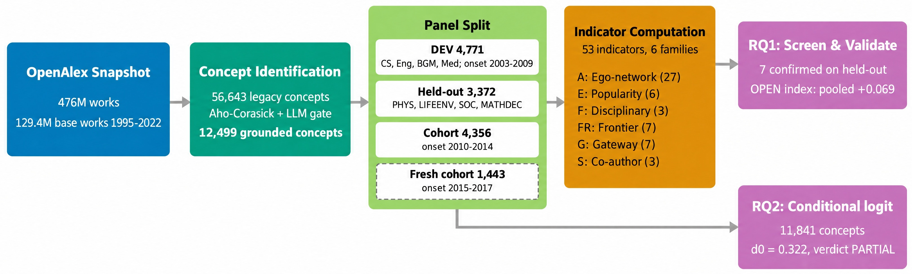

The finding
Question. When a new scientific concept appears, does the shape of its early tell us how broadly it will spread across fields six to eight years later, beyond what its early popularity already says?
Answer. A little, and consistently. Concepts whose home-field neighbours are novel and span many topic communities reach more venue fields later (whether they also keep changing year to year could not be tested). The , built from six such network measures, has a small positive with after controlling for the . The sign is the same in every body of data tested, but the effect is too small to improve a forecast.
+0.069
Pooled partial Spearman of OPENhome with breadth across six at .
Does it hold in every body of data?
- Body estimate, 95% CI
- DerSimonian–Laird pool
- DEV selection body (not pooled)
- Shuffled-outcome 95th percentile, |ρ| (baseline)
Shuffled-outcome bands come from 200 within-body outcome permutations at R2 and are drawn for every rung as a reference for chance-level size. Point at or tab to a row for its full record.
How it works
What happens to one concept on its way to a number? The study grounds 12,499 concepts in the OpenAlex snapshot, measures each one's first three years, and follows it to years six to eight. The overview shows the whole design; the stepper below walks one real concept, graphics processing unit (GPU), through each stage beside its matched low-openness partner, vertical-axis wind turbine (VAWT).

One concept through the pipeline
Explore the evidence
Which early signals survive held-out validation?
Ten indicators were chosen on the development set and scored once on four held-out field groups and two cohort splits. Pick a unit to see whether each indicator's partial Spearman with breadth holds there.
- Confirmed on held-out (Holm p < 0.05, CI excludes zero)
- Not confirmed
Do the indicators add forecasting power over the baseline?
What does openness look like for a single concept?
The fresh 2015–2017 cohort was never used to choose the index. Each record below holds a concept's early inputs, a frozen B5-only forecast of its breadth, a frozen B5 + OPENhome forecast, and the breadth it actually reached. Filter, search and sort, then select a concept.
All concepts in view: openness against breadth beyond the B5 forecast
- Concept in view
- Selected concept
- Zero: breadth exactly as B5 forecast
Try it
Compute OPEN yourself
OPEN is simple enough to run here: each component is with constants frozen on the 12,499-concept frame, signed, and averaged. Pick a concept from the seven matched case pairs, choose a build, and switch components off to see what carries the score.
What if we split the cohort at an openness threshold?
Move the threshold over the recorded OPENhome scores of the 573 cohort concepts that have both forecasts and an outcome. The chart recomputes how far concepts on each side landed from their B5 forecast.
Breadth beyond forecast = observed O2r (m = 50) minus the frozen B5-only forecast, in venue fields. This is a descriptive split of recorded values, not the paper's partial Spearman.
Where it fails
Three places where the evidence stops short: the churn signal under noise controls, the retained-frontier entry model, and individual concepts that openness mis-forecasts.
Is the signal real turnover, or an artefact of thin yearly samples? Each row re-scores the pooled association after one noise control.
Do concepts enter next the fields related to the ones that them? The is positive, but switch on the checks the pre-registration required.
What the paper does not show
- No forecasting gain. OPENhome adds no forecasting gain over B5 (+0.002 [−0.003, +0.008]). The association is modest.
- Not causal. Early openness could reflect a concept's intrinsic generality, the diversity of the research community around it, or the breadth of the problems it addresses. A within-concept closure test is null on DEV and opposite-signed on held-out fields (−0.079), so openness behaves as a between-concept trait.
- Temporal turnover is untested, not refuted. The temporal-excess variants have split-half reliability below 0.05, so static dispersion and temporal churn cannot be separated at about 10 home papers per year.
- Mechanical coupling. About half of the OPENall signal is coupling between off-home papers in the ego network and the breadth outcome. OPENhome is free of it but marginal: on the fresh cohort its DerSimonian–Laird interval includes zero (+0.083 [−0.007, +0.173]).
- Prior unsealing. Held-out outcomes were read by earlier experiments in the same project, so the pool is descriptive rather than confirmatory. Only the 2015–2017 cohort was never used before.
- Vocabulary bias. The legacy concept vocabulary is survivor-selected; the vocabulary-free frame is small (636 concepts, pre-unseal power 0.47) and its verdict is partial.
- Retained-frontier entry is PARTIAL. Persistence and volume stay confounded, and the effect is specific to the PMI backbone.